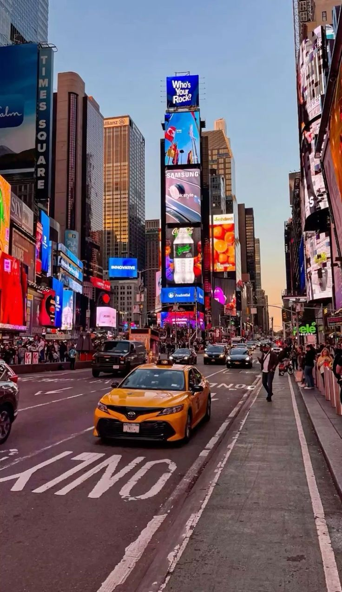
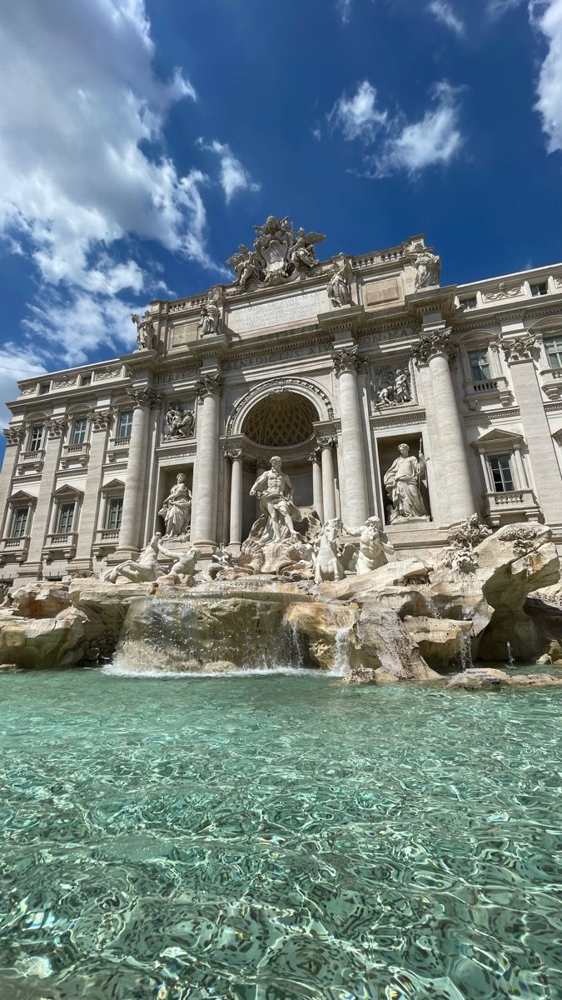
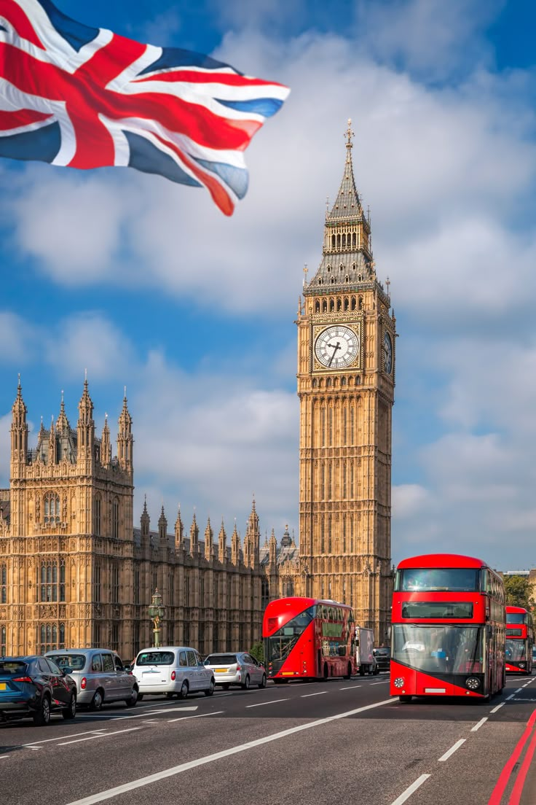

París, Francia
Famosa por la Torre Eiffel y su ambiente romántico.
Ideal para arte, gastronomía y cultura.


Tokio, Japón
Una mezcla increíble de tecnología moderna y tradición.
Conocida por sus templos, anime y comida japonesa.

.jpg)
Nueva York, US
La ciudad que nunca duerme.
Lugares famosos: Times Square, Central Park y Estatua de la Libertad.


Roma, Italia
Llena de historia del Imperio Romano.
Atracciones como el Coliseo y el Vaticano.


Barcelona, España
Conocida por la arquitectura de Gaudí y sus playas.
La Sagrada Familia es su símbolo más famoso.


Londres, Gran Bretaña
Ciudad histórica con lugares icónicos como Big Ben y el Palacio de Buckingham.


Dubái, Emiratos Árabes
Famosa por sus rascacielos y lujo.
Aquí está el edificio más alto del mundo, el Burj Khalifa.


Sidney, Australia
Conocida por la Ópera de Sídney y sus playas.


Cancún, Mexico
Uno de los destinos de playa más famosos del mundo.
Aguas turquesas y resorts turísticos.


Río de Janeiro, Brasil
Aguas turquesas y resorts turísticos.
Tiene playas icónicas como Copacabana.

.jpg)